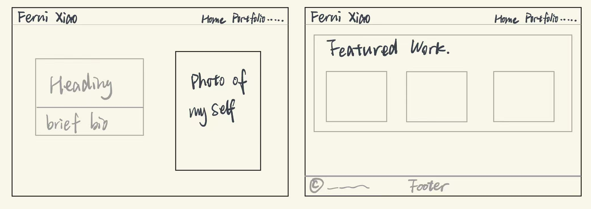
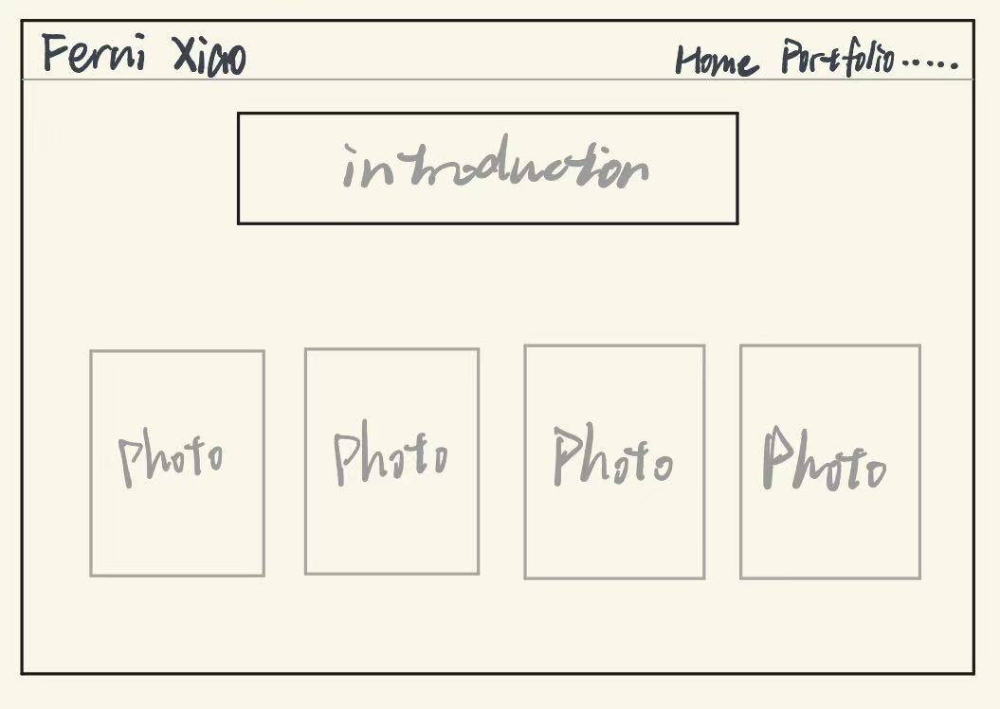
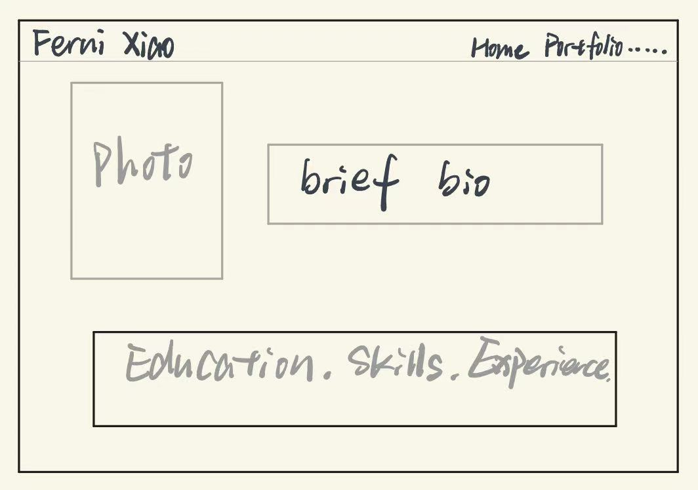
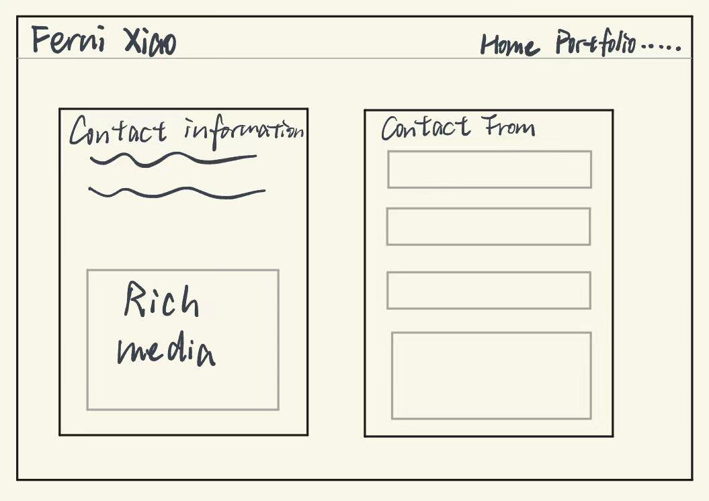
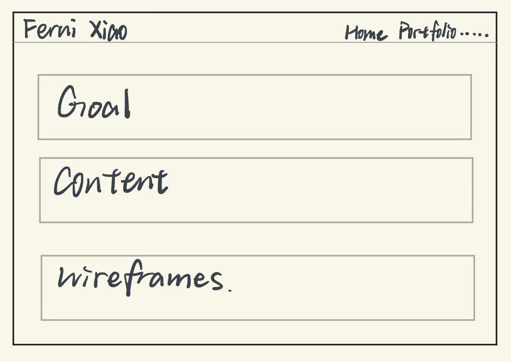

Design Documentation
The Process Page
This page documents the design and development process behind the website, including planning, visual decisions, wireframes, accessibility considerations, and references.
Design Goal
My goal was to create a photography portfolio that also works as a professional identity website for a hiring manager or internship reviewer. I wanted the site to feel organized, readable, and visually clean.
Design Decisions
I used a simple header and navigation system across all pages to create consistency. I kept the layout structured and used clear sections so that both the photography work and resume information could be easily scanned.
I selected a light neutral background and dark text to maintain readability and a professional tone. I used a grid layout on the portfolio page because it allows multiple images to be displayed in an organized way.
Wireframes





Accessibility Statement
I used semantic HTML elements such as header, nav, main, section, figure, and footer to create a meaningful structure. I included alt text for important images, maintained readable text contrast, and used responsive layouts so the website remains usable on different screen sizes.
References
- Leibovitz, A. (2018, April 9). Annie Leibovitz: Life through a lens [Video]. YouTube. https://www.youtube.com/watch?v=NFYHfcTyU4M